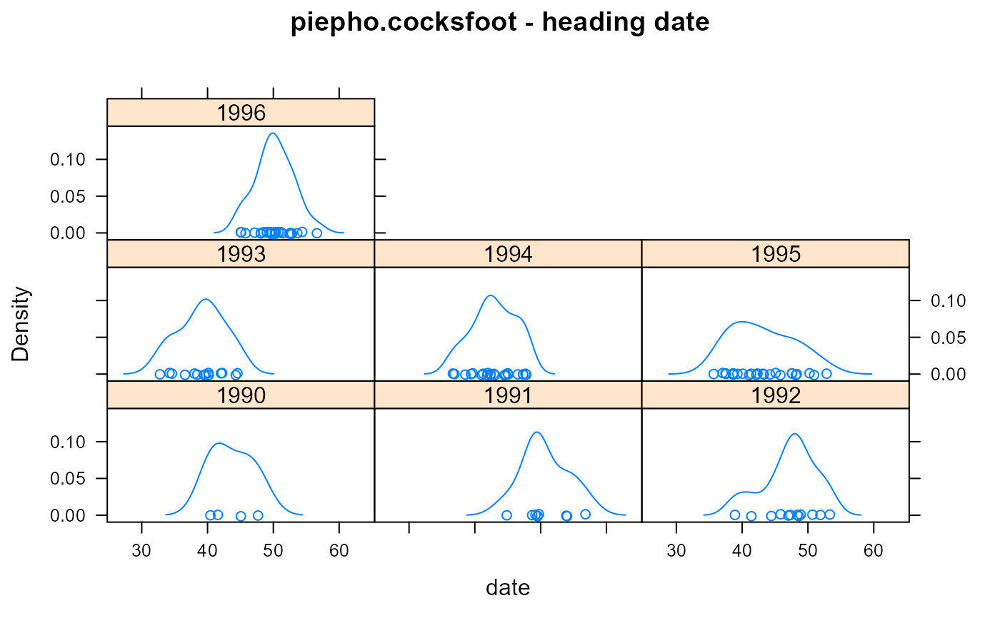
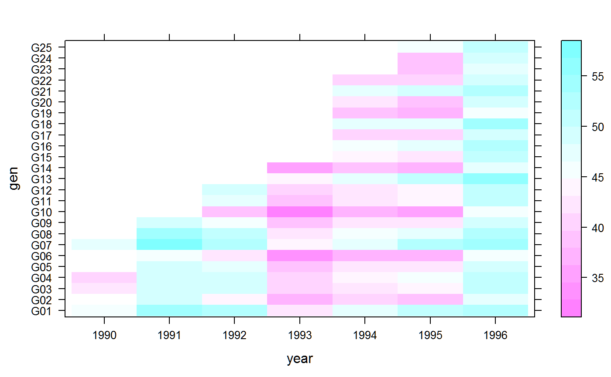

piepho.cocksfoot.RdMulti-environment trial of cock's foot, heading dates for 25 varieties in 7 yearsyears
data("piepho.cocksfoot")
A data frame with 111 observations on the following 3 variables.
gengenotype factor, 25 levels
yearyear, numeric
dateheading date (days from April 1)
These data are heading dates (days from April 1 to heading) of 25 cock's foot Dactylis glomerata varieties in trials at Hannover, Germany, repeated over seven years. Values are means over replications.
Piepho fits a model similar to Finlay-Wilkinson regression, but with genotype and environment swapped.
Hans-Pieter Piepho. (1999). Fitting a Regression Model for Genotype-by-Environment Data on Heading Dates in Grasses by Methods for Nonlinear Mixed Models. Biometrics, 55, 1120-1128. http://doi.org/10.1111/j.0006-341X.1999.01120.x
library(agridat) data(piepho.cocksfoot) dat <- piepho.cocksfoot dat$year <- factor(dat$year) libs(lattice) # Gaussian, not gamma distn densityplot(~date|year, data=dat, main="piepho.cocksfoot - heading date")#> #>#> #> #>levelplot(date ~ year*gen, dat)# note mp(random,fixed) mod3 <- mumm(date ~ -1 + gen + (1|year) + mp(year, gen), dat) # Compare to Piepho table 3, "full maximum likelihood" mod3$sigmas^2 # variances for year:gen, residual match#> year mp year:gen Residual #> 17.70287377 0.02944158 0.49024737# year mp year:gen Residual # 17.70287377 0.02944158 0.49024737 mod3$par_fix # fixed genotypes match#> genG01 genG02 genG03 genG04 genG05 genG06 genG07 genG08 #> 49.03932 42.08895 45.34113 45.51543 44.13739 39.16979 51.09085 47.99603 #> genG09 genG10 genG11 genG12 genG13 genG14 genG15 genG16 #> 43.70303 38.06826 44.89774 45.25306 50.94368 40.38233 44.87265 47.74911 #> genG17 genG18 genG19 genG20 genG21 genG22 genG23 genG24 #> 42.03352 48.95280 39.95405 42.59060 48.79849 43.04997 41.37675 41.67079 #> genG25 #> 46.57350mod3$sdreport # estim/stderr#> sdreport(.) result #> Estimate Std. Error #> nu 49.0393183 1.55038652 #> nu 42.0889493 1.67597832 #> nu 45.3411252 1.59818620 #> nu 45.5154299 1.59518533 #> nu 44.1373861 1.62756428 #> nu 39.1697852 1.76125998 #> nu 51.0908495 1.53956776 #> nu 47.9960266 1.56576606 #> nu 43.7030334 1.63697703 #> nu 38.0682565 1.80392629 #> nu 44.8977425 1.61732238 #> nu 45.2530641 1.61077078 #> nu 50.9436831 1.56535281 #> nu 40.3823321 1.73885394 #> nu 44.8726502 1.63879513 #> nu 47.7491072 1.59614257 #> nu 42.0335238 1.70320011 #> nu 48.9527990 1.58596689 #> nu 39.9540456 1.76349439 #> nu 42.5905959 1.68897370 #> nu 48.7984928 1.58698722 #> nu 43.0499658 1.67755457 #> nu 41.3767470 1.73858816 #> nu 41.6707881 1.73053097 #> nu 46.5734997 1.62869923 #> log_sigma_a 1.4368635 0.26842824 #> log_sigma_b -1.7626737 0.29822297 #> log_sigma -0.3564226 0.07156223 #> transf_rho -0.3169323 0.43049164 #> Maximum gradient component: 4.043332e-05# Estimate Std. Error # nu 49.0393183 1.55038652 # nu 42.0889493 1.67597832 # nu 45.3411252 1.59818620 ranef(mod3) # random year:gen match#> $year #> 1990 1991 1992 1993 1994 1995 1996 #> -4.361786 5.379490 2.524398 -5.703152 -1.865068 -1.525185 5.551296 #> #> $`mp year:gen` #> 1990 1991 1992 1993 1994 1995 #> 0.10595661 -0.05298523 0.08228274 -0.09629696 -0.11045540 0.29637268 #> 1996 #> -0.22487450 #># $`mp year:gen` # 1990 1991 1992 1993 1994 1995 # 0.10595661 -0.05298523 0.08228274 -0.09629696 -0.11045540 0.29637268